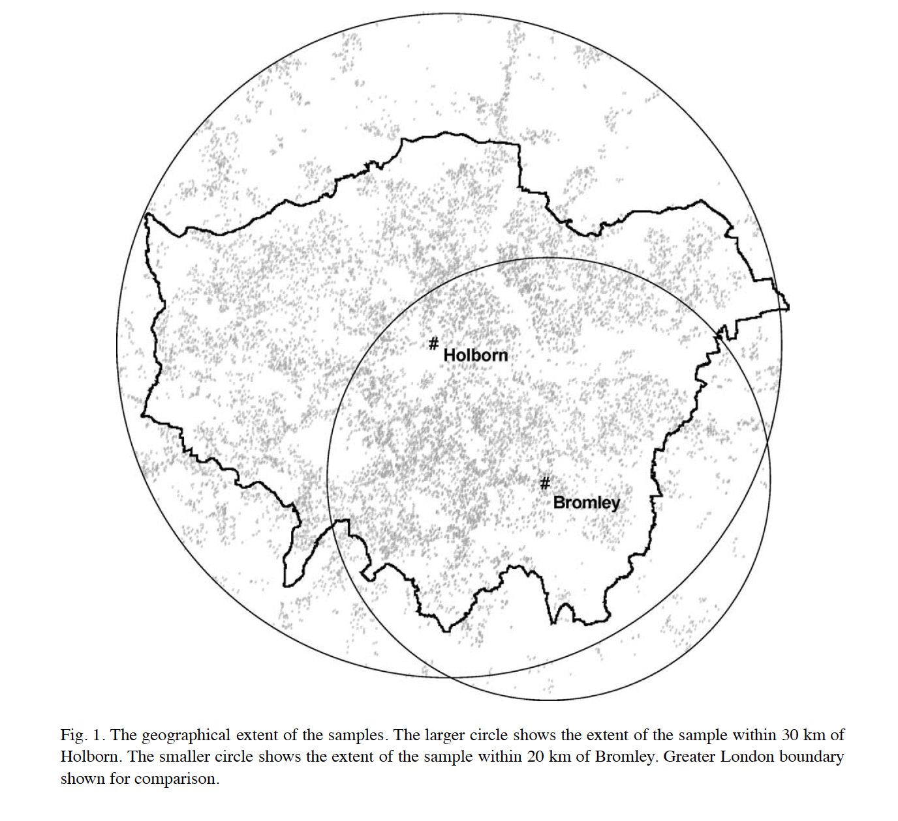

Por qué debemos preocuparnos por los métodos geográficos en las ciencias sociales?
No es un nuevo concepto!
[...] if social science profession has notably neglected it [geography], this is not because we have been uninterested in the subject, but because they have regarded it as intractable.
Source: Fujita, M; Krugman, P and Venables, A., 1999.
Qué es nuevo?
[1] Nuevas formas de ver los mismos problemas
Remotely sensed information
(Donaldson and Storeygard, 2016).
Acceso a información que es dificil de conseguir de otras maneras
Alta Desagregación Espacial
Coberturas para muchos lugares

(Vernon Henderson, J.; Storeygard, A. and Weil, D 2012)
Other examples: Henderson et al (2012), Pinkovskiy & Sala-i-Martin (2016), Hodler & Raschky (2014), Michalopoulos & Papaioannou (2013, 2014), Alesina et al (2016), among others.
Mapas históricos
recovery old (persistent) characteristics

|

|
Digitized by Nunn (2008). He found a negative relationship between the number of slaves exported from a country and current economic performance.
Then use by Nunn & Wantchekon (2011), Michalopoulos & Papaioannou (2013, 2014, 2015), Alsan (2015), Alesina et al. (2016), etc.
Información Individual Geo-referenciada
Localización y geografía como un componente importante

(Duranton, D. and Overman, H 2005) → location patterns of industries in UK
Others examples of geo-coded data sets: .LSMS-ISA (World Bank) -> geo-coded household level 6 African countries
[2] SIG ayuda a mejorar las aproximaciones cuantitativas
reducing the omitted-variable bias (I)
gathering more information from neighborhood
|  |

|
Gibbons, S. and Machin, S (2005) ↑ transport → ↑ house prices
Other nice examples are: (i) Conley & Udry (2010) social learning in the diffusion Ghana ; (ii) Acemoglu, D; Garcia-Jimeno, C. and Robinson (2014) direct and spillover effects of local state capacity in Colombia
reducing the omitted-variable bias (II)
building instruments

Nunn (2008) Current African Countries & Slave Trades
Instrument Slave Export → distances from each African country to the locations where slaves were demanded
Nuevas Formas de Identificar
Spatial Regression Discontinuity
.png)
Dell (2010) Current African Countries & Slave Trades
Colonial Institutions (Mita) → current outcomes
Exogenous unit of analysis
[3] Nueva dimensión para la recolección de datos individuales
Improve your data collection
Most collection data software allows to gather GPS location (e.g. ODK Survey, Survey CTO, CAPI)